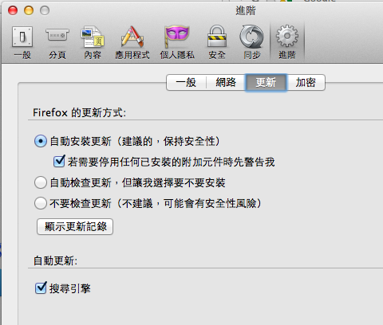
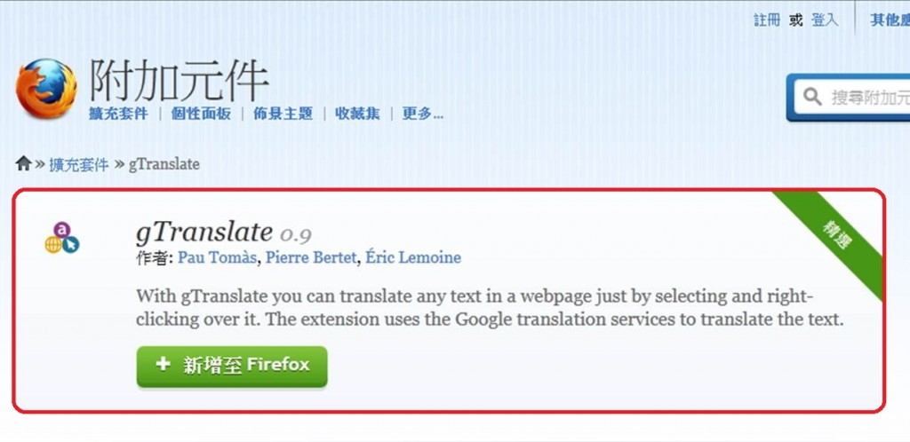

9月282012 Persona 網路身分識別服務 – Beta 版首度釋出！ 在過去一年中，Mozilla 持續進行一個實驗性質的網路身分識別服務 Persona，此登錄系統保障使用者個資，消除各網站需使用不同密碼登入的問題，在兼顧便利性和網路個資安全性的前提下，Mozilla 很高興宣佈即將脫離「實驗」標籤，正式朝 Persona Beta 版邁進。 Persona 已經可...
9月272012 【破解 Firefox 迷思】Firefox 很慢？記憶體吃很兇？ Firefox 或許不是地表最快瀏覽器，但要說它「慢」總也該有點依據。程式的速度受到很多因素影響，包括： 電腦配備，你可以視其為「資源」 同時間啟動的程式、分頁等。畢竟同一份資源拿來同時做一件事情跟做 20 件事情，總是有點差別。 網頁使用的技術，越複雜牽涉的就越多 是否裝了會影響網頁編排、解析網頁...
9月202012 【Add-On 一點通】學生篇 「Evernote Web Clipper」 繼上回和大家介紹好用的 Firefox 附加元件「gTranslate」，今天再推薦另一個好用的附加元件「Evernote Web Clipper」，協助你輕鬆記憶所有在網路上看見的精彩內容，只要輕鬆按幾下即可儲存實際的網頁，例如內文、連結、影像等，存下來的影像也可以做更靈活的運用呦！ 當你安裝完成...
9月192012 新功能預告：「Firefox 健康檢查報告」即將進入測試 Firefox 健康檢查報告 (Firefox Health Report，簡稱 FHR) 是 Firefox 即將推出的功能，讓使用者可以調整 Firefox 相關設定以達最佳狀況，同時能幫助我們打造更棒的瀏覽器。作為希望讓網路更好的非營利組織，Mozilla 將使用 FHR 來提昇效能、修復問題...
9月152012 Code Rush – Mozilla 誕生故事相關紀錄片 影片拍攝與授權：Code Rush by David Winton is licensed under a CC 3.0 US License. 字幕翻譯：感謝 Amara 上的社群成員翻譯，以及 MozTW 社群籌劃字幕翻譯活動...
9月142012 【破解 Firefox 迷思】Firefox 版本升級  Firefox 的快速開發週期已經跑了一年多，除了版號之外其實功能與效能上也都有不錯的進展。本來快速開發週期就是為了在更短的時間內，讓大家能享受新科技帶來的方便，不過相對來說也產生了一些後遺症。這些所謂的「後遺症」為使用者帶來些許不便，也導致罵聲連連，但有了各位的回饋、新版的 Firefox 裡已經...
9月112012 得獎名單公佈『捍衛隱私 就是 Firefox 的正義』電影簽名海報 感謝大家熱情參與『捍衛隱私 就是 Firefox 的正義』活動，恭喜以下10 位幸運得獎人，獲得BBS 鄉民的正義電影簽名海報一張: 麻煩以下獲獎人在本週 9/14 (五)下午6點前將您的收件地址用私信方式到 Mozilla Taiwan 粉絲團小編，私信內容請註名：1) 真實姓名 2) 完整Ema...
9月72012 全球首支 Firefox OS 智慧型手機，2013 即將顛覆想像！ 【美商謀智訊息】以推動網路平等、自由、開放為宗旨的全球非營利組織－Mozilla 基金會，2012年推出以 HTML5 為基礎的行動作業系統 Firefox OS 引起廣大期待。預計全球第一款 Firefox OS 將由 Telefonica (西班牙電信公司) 於巴西推出。以下是來自舊金山的記者會...
9月52012 【Add-On 一點通】學生篇「gTranslate」  九月開學季，你／妳開始做收心操了嗎？今天要和大家分享一個學生愛用的附加元件「gTranslate」！大家不知道有沒有聽過很早很早以前有一個需付費的翻譯軟體 Dr.eye？「gTranslate」就是一個具備相似功能，但不需付費，安裝也十分簡便的即時翻譯 AddOn！ 安裝好 AddOn 後，在逛網頁...
9月42012 Firefox 開發工具大集結：開發者工具列 從 Firefox 4 起，我們在瀏覽器裡放入了很多功能不同的開發工具，以方便開發者檢查網頁在 Firefox 上的運行狀況。這些工具包括： 網頁主控台 ：提供網路連線狀況、JavaScript 及 CSS 錯誤訊息等資訊 網頁檢測工具 ：提供網頁元素檢測、樣式檢測等工具，也可以即時修改 程式碼速記...
9月32012 Firefox Home 正式退役！功能可使用至年底 早些時候 Mozilla 一直專注於要讓使用者在不同的平台與裝置上享有共同的美好體驗，為此我們為 iOS 的使用者釋出 Firefox Home，將 Firefox 部分功能帶進 iOS，主要是 Firefox Sync (同步功能)。此舉也為該平台帶來了相當程度的價值與創新體驗，而如今我們決定要將...